A Raiz Operária e a Fundação (1910)
O Sport Club Corinthians Paulista nasceu da mais pura paixão popular. No dia 1º de setembro de 1910, um grupo de cinco operários formados por: Joaquim Ambrósio, Antônio Pereira, Rafael Perrone, Anselmo Corrêa e Carlos Silva. Reunidos à luz de um lampião na Rua dos Italianos, no bairro do Bom Retiro, em São Paulo, decidiu fundar um time de futebol.
Inspirados pela passagem do time inglês Corinthian Football Club pelo Brasil, batizaram o novo clube. Enquanto o futebol era dominado pela elite, o Corinthians surgiu com a missão de ser o "time do povo", rompendo barreiras sociais e conquistando rapidamente a simpatia da massa trabalhadora.

Arquivo Corinthians
O Início de uma Lenda e o "Mosqueteiro"
O primeiro título Paulista veio em 1914 quando o clube conquistou o Campeonato Paulista, que foi marcada por uma campanha invicta, com 10 vitória em 10 jogos, mas foi a partir dos anos 20 que o Timão consolidou sua força.
O apelido "Mosqueteiro", que você usa no seu logo, surgiu em 1929, após uma vitória histórica contra o Barracas, da Argentina. O jornalista Thomaz Mazzoni, do jornal A Gazeta, descreveu a performance do time como tendo "fibra de mosqueteiro", inspirado no livro "Os Três Mosqueteiros" de Alexandre Dumas, para exaltar a coragem e a bravura dos jogadores. A associação se consolidou quando o jornal, que também criou outros mascotes para times paulistas, escolheu o Mosqueteiro para o Corinthians.
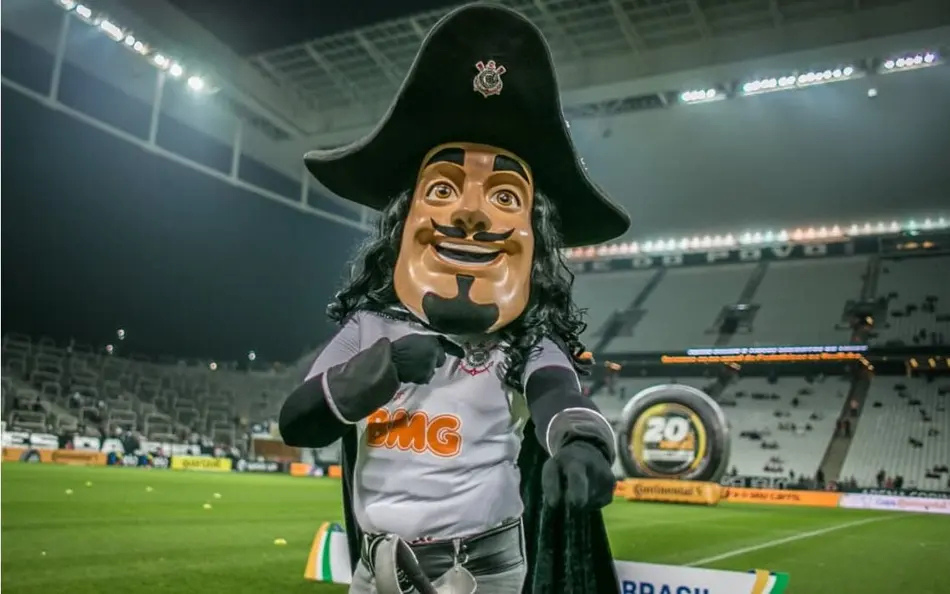
Corinthians (Foto: Reprodução)
A Era de Ouro e o Período de Jejum
As décadas de 30, 40 e 50 foram marcadas por grandes esquadrões e títulos, incluindo o tricampeonato Paulista de 1951, 1952 e 1954, com o lendário Cláudio, o maior artilheiro da história do clube.
No entanto, o Corinthians enfrentou um doloroso período de quase 23 anos sem títulos (1954 a 1977). Essa época, conhecida como o "Jejum", forjou ainda mais a identidade da torcida. A Fiel se manteve inabalável, provando que sua paixão não dependia de vitórias, e sim de raça e fidelidade.
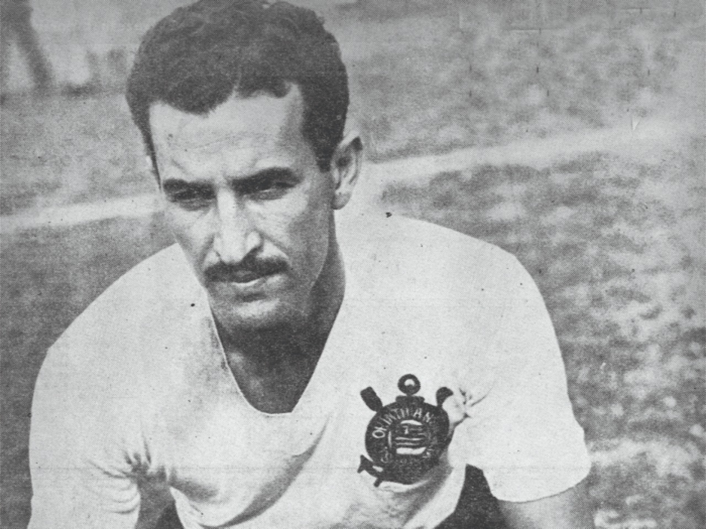
Claudio 'O Gerente' artilheiro do clube - Arquivo Corinthians
O Renascimento
O título do Campeonato Paulista de 1977 é considerado o "renascimento" do Corinthians porque marcou a quebra de um jejum de quase 23 anos sem conquistas, um período de grande sofrimento para a torcida. O gol da vitória, marcado por Basílio contra a Ponte Preta, libertou a torcida do trauma e inaugurou uma nova era de glórias para o clube.
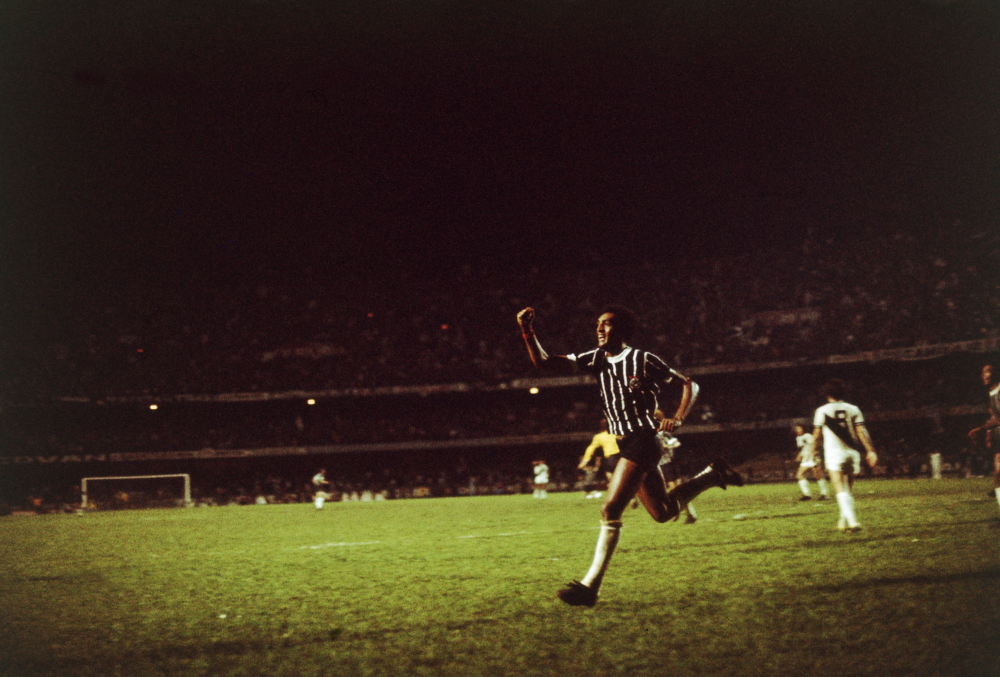
Foto: José Pinto / Placar
A Democracia Corinthiana
No início dos anos 80, o Corinthians protagonizou um dos movimentos mais importantes do futebol e da política brasileira: a Democracia Corinthiana. Liderada por ídolos como Sócrates e Casagrande, a equipe decidia tudo por meio de votos (desde a escalação até a contratação) e usava o futebol para protestar contra a Ditadura Militar, reafirmando sua origem popular e engajada.
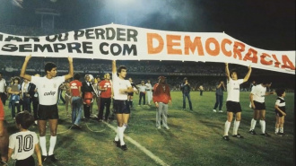
Foto: Reprodução/Corinthians
Década de 90
A década de 90 trouxe uma nova era de glórias com a ascensão de ídolos como o Craque Neto, que liderou o time ao primeiro título do Campeonato Brasileiro em 1990. Esta década foi marcada por mais campeonatos nacionais e estaduais, estabelecendo o Corinthians como a maior força popular do país.
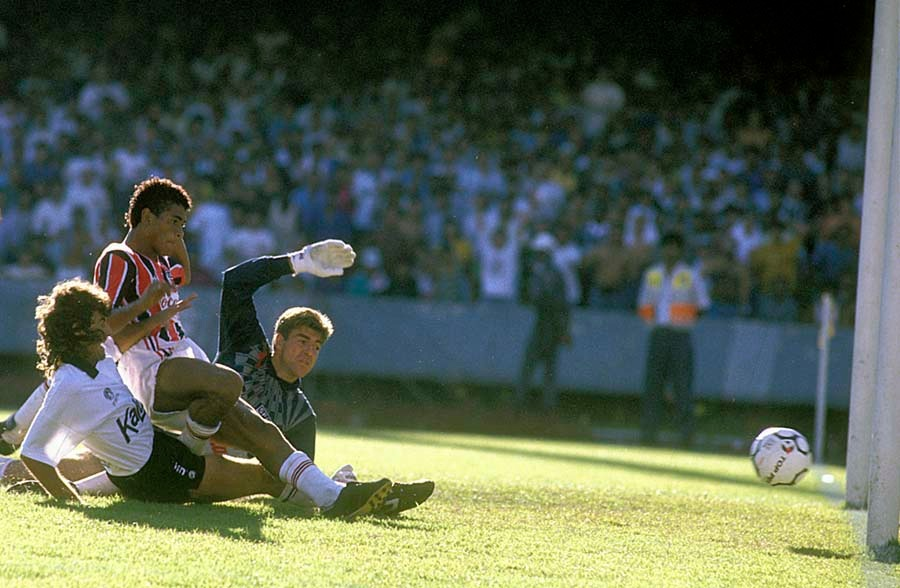
Foto: Daniel Augusto Jr./Agência Corinthians
O Primeiro Mundial e a Glória Internacional
A virada do milênio foi celebrada com a conquista do primeiro Mundial de Clubes da FIFA em 2000, realizado no Brasil. O título internacional deu ao Timão o status de clube global.

Foto: Alexandre Battibugli
A Época de Ouro Recente (2012 - Atualmente)
A consagração definitiva no cenário internacional veio em 2012, com a inédita Copa Libertadores da América invicta e o Bicampeonato Mundial de Clubes no Japão.
A nova fase se consolidou com a inauguração da Neo Química Arena em 2014. O Timão manteve sua tradição de raça e vitória, conquistando mais títulos importantes: Brasileiros em 2015 e 2017, além do histórico tricampeonato Paulista consecutivo (2017, 2018 e 2019).
Até os dias de hoje, o Corinthians continua a ser um protagonista no futebol brasileiro, mantendo sua essência de time guerreiro e sua paixão inabalável, buscando constantemente elevar seu legado e celebrar sua rica história a cada jogo na Arena.
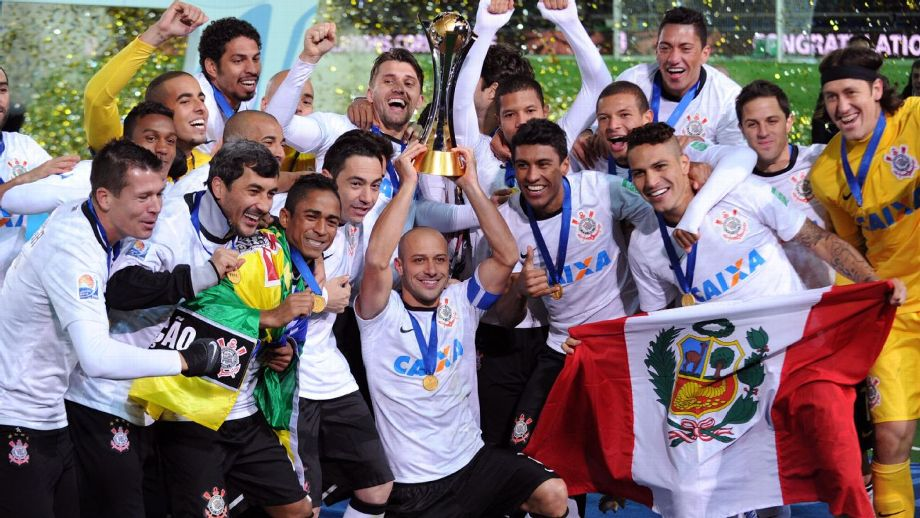
Jogadores do Corinthians comemoram a conquista do Mundial de Clubes Getty Images
Curiosidades do Timão
A Origem do Nome Timão
O apelido "Timão" não é apenas uma referência ao leme do navio presente no escudo. Ele surgiu, na verdade, da união do time e da torcida. Os radialistas costumavam se referir ao clube como "o Grande Time", que, com o tempo, foi abreviado para "o Timão".
O Escudo do clube
O desenho do escudo, com a âncora e os remos, foi incorporado em 1920 para homenagear os esportes náuticos que o Corinthians passou a praticar.
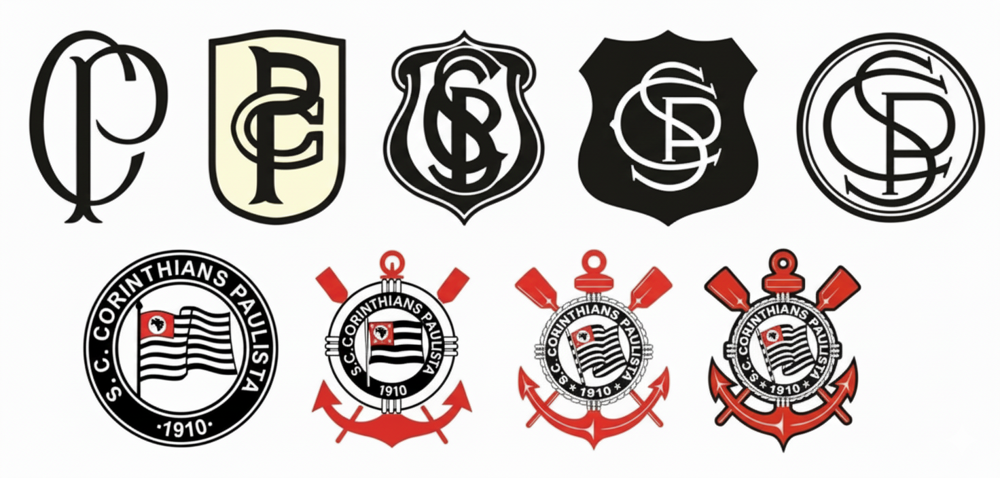
A história do Corinthians pode ser facilmente contada por meio dos seus escudos
Invasão Corinthiana
Dia da Invasão: Em 1976, cerca de 70 mil corintianos (estima-se que mais de 50 mil sem ingresso) invadiram o Maracanã para acompanhar o jogo contra o Fluminense pela semifinal do Brasileirão. Foi um marco na história da torcida e do futebol brasileiro.
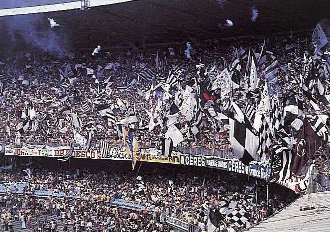
Corinthians (Foto: Reprodução)
Campanha Invicta até a Glória Eterna
O Corinthians é o único time brasileiro bicampeão mundial de forma invicta. Em 2000, não perdeu nenhum jogo. Em 2012, após a Libertadores invicta, também não sofreu nenhuma derrota no Mundial do Japão.
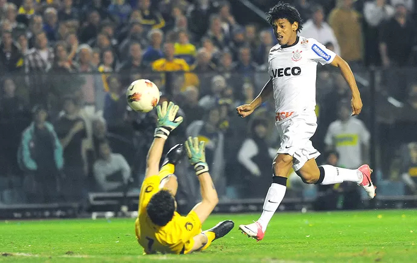
(Foto: Marcos Ribolli / Globoesporte.com)
Maior artilheiro do Clube
O maior artilheiro da história do Corinthians é o lendário Cláudio Christovam de Pinho, que marcou 305 gols em 550 jogos entre 1945 e 1957.
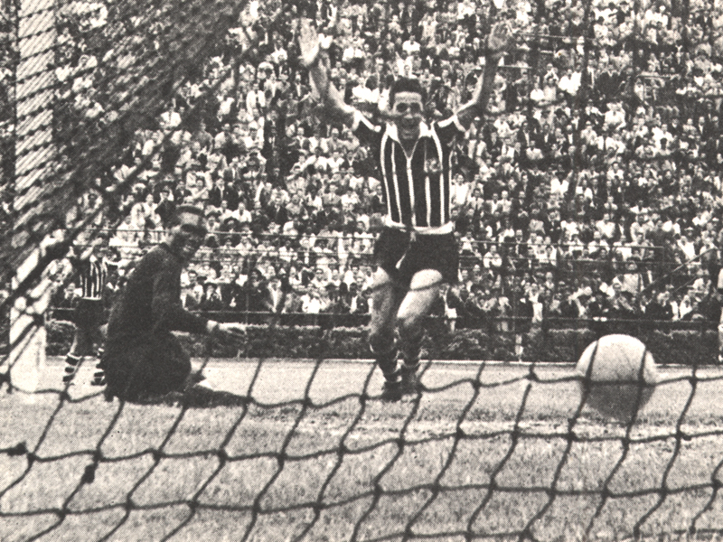
Corinthians (Foto: Reprodução)
Domínio no Futebol Feminino
O Corinthians Feminino, carinhosamente apelidado de "As Brabas", é atualmente a maior potência do futebol feminino sul-americano.
O clube detém o recorde de títulos consecutivos na Copa Libertadores Feminina, sendo a equipe com mais taças na história do torneio.
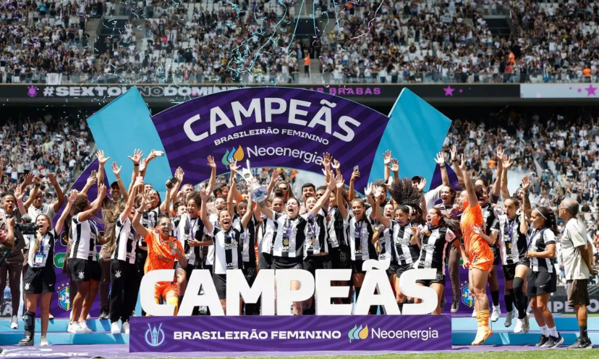
Foto: Olimpíada Todo Dia
A Origem das Cores
As cores originais do Corinthians eram o creme e o preto. Em 1913, quando o clube teve dificuldades para lavar os uniformes devido o tecido creme que sujava muito, o creme foi abandonado e substituído pelo branco que conhecemos hoje, consolidando o lendário preto e branco.
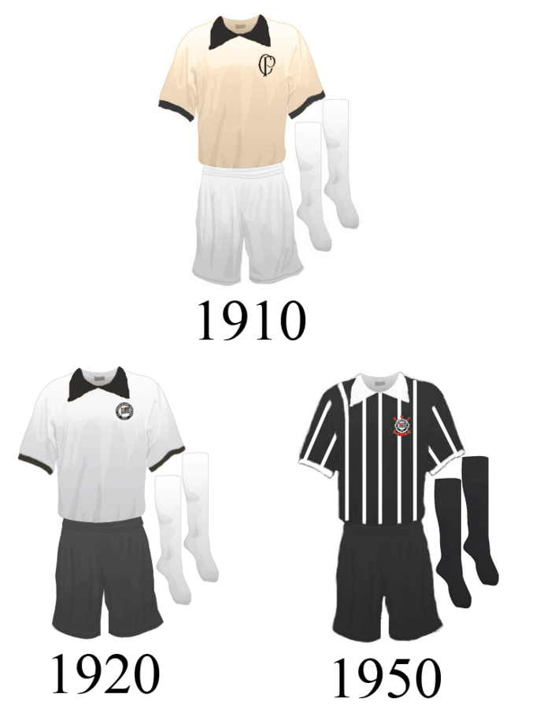
Foto: autor(Lucas gc)
Criação do Hino
O hino oficial do Corinthians, composto por Lauro D'Ávila, foi escrito em 1930. A famosa frase "Tu és, orgulho" fazia referência direta ao fato de o Corinthians ter conquistado o primeiro tricampeonato paulista em 1928/29/30, um feito inédito na época.
Maior Goleada da Historia do Campeonato Brasileiro
Em 1983, Timão venceu o Tiradentes-PI por 10 a 1, de virada, com direito a quatro gols do Dr. Sócrates; partida ainda é a com a maior diferença de gols da história do Brasileirão.
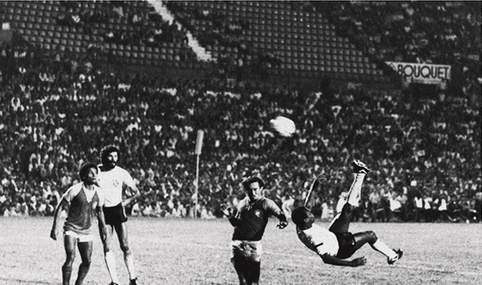
Foto: Arquivo Placar